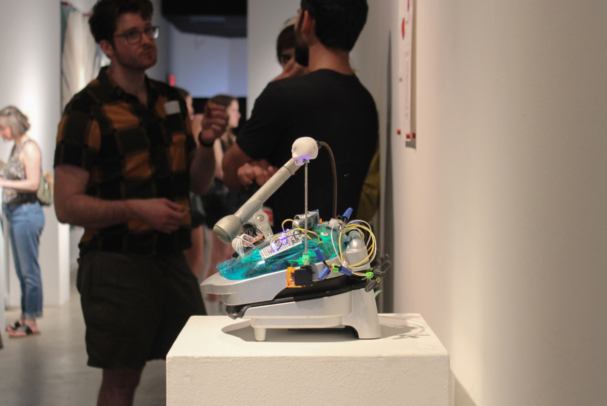
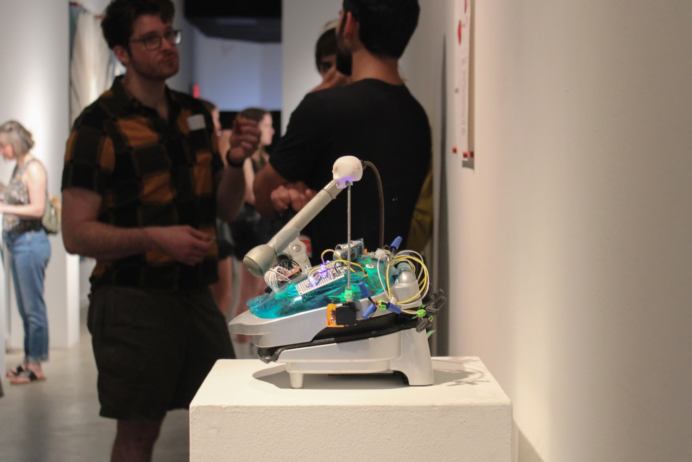

Title: Sparklines
Date: April 18 to 20, 2025
Location: Majestic Galleries in Nelsonville, Ohio
Description: Sparklines was an exhibition featuring meticulous, hand drafted data visualizations like ones made by William Playfair or W.E.B Dubois in the 1700's and 1800's. The visualizations orbit a coffee maker computer I built and named Coffeematic PC. Coffeematic PC is part of a lineage of coffee maker computers. By focusing on this unique lineage of coffee maker computers along with public data, Sparklines tries to understand more about a subversive group I call artist/hackers.


 



Photography by my lovely fiancée :)